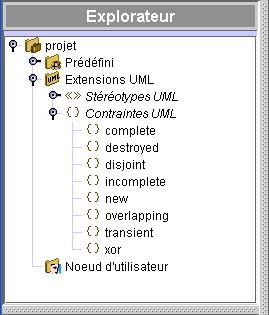
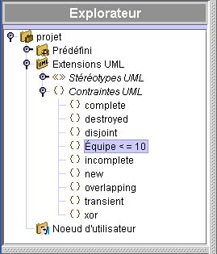

Les Contraintes UML
Une contrainte est une condition ou restriction sémantique appliquée à
un modèle.
Un élément du modèle peut avoir plusieurs contraintes. Une contrainte est déclarée en
texte libre; tel que « valeur positive » ou « valeur > 0 ».

Ajouter de nouvelles contraintes
Pour ajouter une contrainte UML :
- Sélectionnez Extensions UML et de la barre d’outils Édition faites Ajouter > Contrainte UML.
- Changer le nom implicite et appuyez sur Retour.

Appliquer une contrainte à un élément du modèle
Pour appliquer une contrainte à un élément du modèle :
- Dans la fenêtre de propriétés d’un objet (par exemple, celle d’une table ou
d’une classe), cliquez sur contraintes UML.
- Cliquez sur Lier.
- De la fenêtre Contraintes UML, choisissez une contrainte et cliquez Sélectionner.
- Cliquez sur Fermer.

Afficher les contraintes
Même si vous pouvez appliquer une contrainte à n'importe quel objet du modèle, seul
les objets suivants permettent l’affichage des stéréotypes : les classes, les paquetages,
les tables, les champs, les méthodes, les associations et bouts d’association. Les noms
des contraintes sont affichés entre accolades. Pour afficher les contraintes, cliquez Format > Styles du Projet > l’onglet qui réfère au
type d'objet auquel la contrainte est appliquée.
Pour plus amples renseignements sur
les Fonctions graphiques, voir Utilisation des Styles.